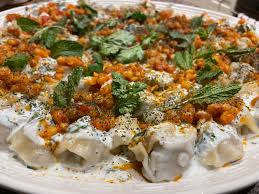
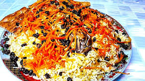
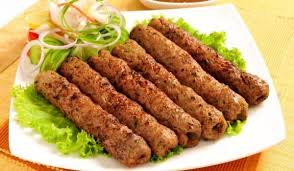
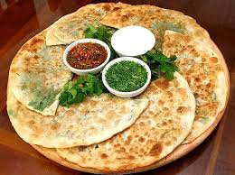
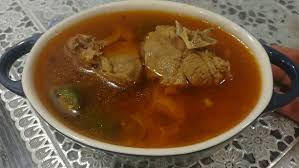

cuisine is rich and diverse, influenced by Central Asian, Persian, and Indian flavors. Some well-known dishes include pilaf, a rice dish often served with lamb, chicken, or beef, and flavored with spices like saffron and cardamom. Kebabs, which are skewered grilled meats, are also very popular, often paired with flatbread. Mantu and ashak are traditional dumplings filled with meat, vegetables, and herbs, and served with yogurt and a tomato-based sauce. Afghan food often features fresh vegetables, legumes, and yogurt, making it hearty and flavorful. Meals are usually enjoyed with tea, and hospitality plays an important role in Afghan food culture.
MuntuMantu is an Afghan dish made of dumplings filled with meaat and onions, served with yogurt and sauce. |
Qabili PaloQabili Palo is a popular Afghan dish with spiced rice, meat (lamb or chicken), and topped with carrots, raisins, and nuts. |
KababKabab is a popular Afghan dish of grilled meat (lamb, chicken, or beef), marinated in spices, and served with rice or flatbread. |
BolaniBolani is a fried Afghan flatbread filled with potatoes or spinach. It's fried and served with yogurt or chutney. |
ShorbaShorba is a traditional Afghan food made with meat , vegetables, and spices. It's flavorful and often served with bread. |